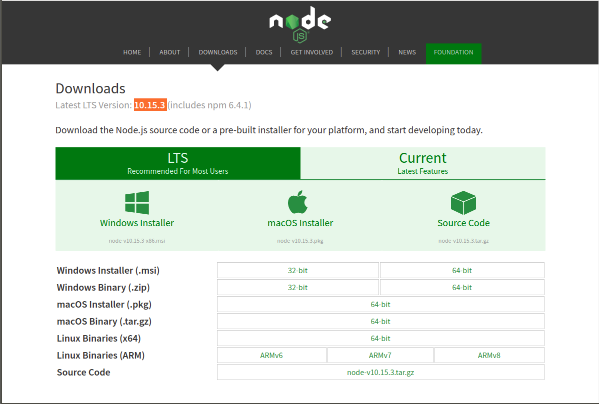
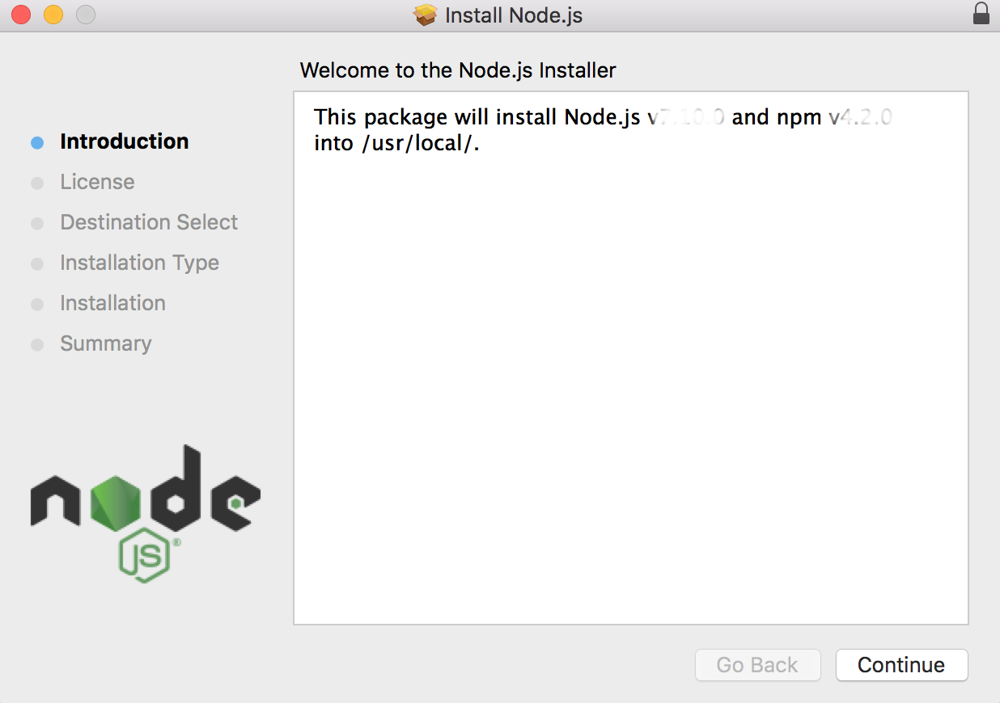
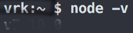
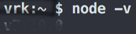
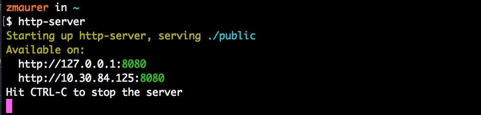
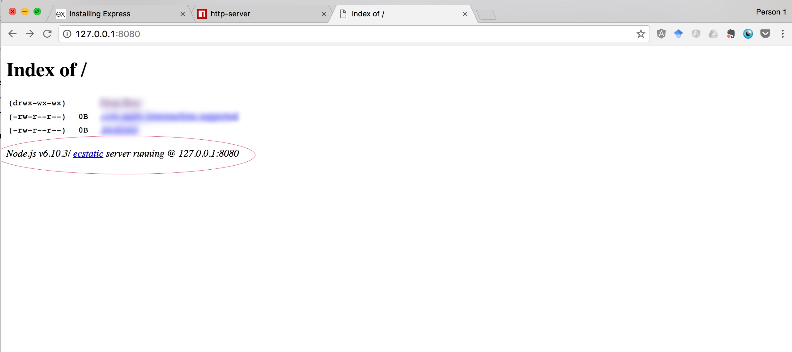

This tutorial has sections covering the following topics:
Installing Node.js
1) Download Installer for Node 10.15.3
- Navigate to https://nodejs.org/en/download/
- Select and download the installer for your operating system.
- Most contemporary laptops will use a 64-bit distribution.
- Click “Current”: Latest features to download Node version 10. Do not download LTS.
- NOTE: This is different from what we said in an earlier version of the instructions. If you’ve already installed LTS, please re-download the Current version and install that instead.

2) Follow GUI installation instructions
- Open the
node-v10.15.3-x86.msifile that you downloaded.- NOTE: This file needs to start with
node-v10and remember to click “Current”: Don’t download LTS.
- NOTE: This file needs to start with
- Just follow the prompts.

3) Testing Node.js
- Open up Terminal (or your Windows command line interface) How to install bash shell command line in windows 10
- Type
nodeafter the command prompt and hit Enter - You should get a JavaScript REPL, similar to the console in the Chrome inspector.
- Try a single line of JavaScript to test it out.
- Hit Ctrl-C twice to exit the REPL
- Run
node -vin terminal and then make sure you havev7.10.0installed.
 

4) Testing npm
npm stands for Node Package Manager. Packages are like libraries. The Node runtime has provided a handy way of accessing, installing and managing these libraries.
- At the command line, type
npmafter the command prompt and hit Enter - You should see the following:

5) OPTIONAL: Install http-server
The http-server command is the NodeJS equivalent of Python’s SimpleHTTPServer. This is not necessary for course, but you may find it useful in general.
- Download
http-serverby runningnpm install http-server -gat the command line. - Documentation for
http-server:https://www.npmjs.com/package/http-server - You will see a progress bar and a bunch of text ouput.
- Spin up a local server by running
http-serverat the command line. - You should see the following: 
- Visit the address specified on the command line in your browser (in this case
http://127.0.0.1:8080) - You should see the following (note the node.js runtime in the red circle): 
Basic Command Line Skills
We are not going to be teaching command line skills in class, as it was considered prerequisite knowledge for course. However, we will provide some basic help below.
Skip this section if you are already familiar with command line interfaces.
Concepts
- The command line is just another way of controlling your computer.
- It is a textual interface. The icons that you commonly interact with (i.e. click on) are parts of a graphical user interface. They can accomplish many of the same things!
- For most development work, a CLI (command line interface) is much more expedient because it allows you to work more fluidly with code and run code/commands that do not have a graphical user interface. At the command line, you are navigating the same filesystem and computer that you would in Finder or any Filesystem explorer.
- However, you have way more control over what you can see and do. This is really powerful, but with great power comes great responsibility. You don’t need to be scared of the command line, but you do need to recognize that it’s not the time to “guess” whether you are about to run the right command. Some commands can be very problematic, such as deleting large amounts of your filesystem (and skipping the trashbin…). We will not be mucking about too much with the command line (and no, it’s not dangerous to leave it running when you’re not looking), but please be aware of blindly copying-and-pasting code from StackOverflow and running it without consideration. These types of scenarios can end poorly.
Some basic commands
Note:
- The
$character signals the beginning of a shell prompt. The shell is the execution environment for commands. You can think of it as the “session”. - Lines starting with
#are comments. These commands are mostly Mac-centric, but most will work on Linux and possibly Windows. (You should check before running.) - Lines starting with
>are the shell’s outputs.
# Clears visual display, does not delete any files.
$ clear
# Print the current working directory -- aka "where am I?"
$ pwd
> /Users/someplace/somewhere/folder/code
# Change directory -- aka "move from one folder to another"
# After typing `cd ` you can hit Tab once or twice and it will autocomplete or
# list the possible folders you can visit
$ cd
# The dot-dot stands for the parent directory. It means to go one directory "up."
$ cd ..
# You can navigate multiple folders in one go:
$ cd somefolder/place/code/
# List the files in a directory -- aka "whats in this folder?"
$ ls
> Somefolder Code Photos
> Dogpictures GIFs course
> rootkit script.py
>
$ ls *.py # you can use regular expressions!
> script.py
# Makes a new directory -- aka "makes a new folder"
$ mkdir hw5
$ ls
> Code Random hw5
$ cd hw5
$ pwd
> ~/User/somefolder/hw5
# Opens the GUI file explorer -- aka "where is this in Finder?"
# Opens the current directory in Finder (the dot is the current directory)
$ open .
# Opens the directory "someFolder" in Finder
$ open someFolder
# Uses the system default program to open this file
$ open somefile.py
A note on deleting files
-
If you are a first-time command line user, I recommend using the
opencommand to open the directory you want to work in, and then use Finder to delete the files you want, as you would normally. -
You also can use the
rmcommand, but if you’re new, I would recommend getting familiar with everything first and then working withrm.